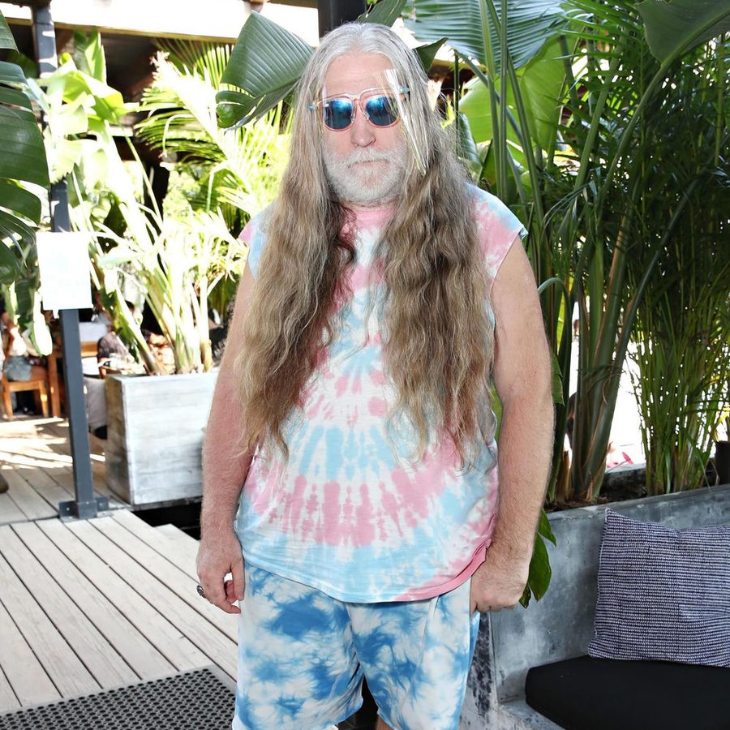

Tommie Sunshine [Audio]: In the land of everlasting brightness


STREAMING AUDIO INTERVIEW
Last time inthemix spoke with NYC electro DJ-cum-producer Tommie Sunshine, he was excitedly telling us how he couldn’t believe he was about to tour Australia for the third time in 18 months. That was a little over 6 months ago, and he seems to have had such an enjoyable time on all of his tours thus far that he’s decided to head back to Australia once again, and this time for the big daddy of all celebrations; NYE.
A bonafide legend on the US dance scene, renowned almost as much for his charisma, outspoken nature and unique style, as he is for his ability to remix rock and indie bands into dancefloor destroying electro bombs, Tommie is a favourite of Australian clubbers. Championed locally by the Onelove team, he mixed a disc on their ‘Your Disco Will Eat You’ CD release earlier in 2007, and since his tour to promote the album he’s spent the remainder of the year continuing to spread the Sunshine gospel far and wide. ITM caught up for a chat to see how things are truckin’ in the land of everlasting brightness.
Tommie Sunshine tours Australia this NYE/NYE period:
Dec 28 – Electric Circus, Adelaide
Dec 31 – Hello NYE 08, Melbourne
Jan 4 – Limelite, Perth
Jan 9 – Continental, Sorrento
Jan 11 – Venue TBA, Hobart
Jan 12 – Platinum, Gold Coast
Jan 18 – La La Land, Byron Bay
Jan 19 – Onelove, Sydney